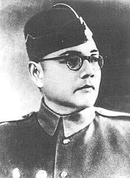
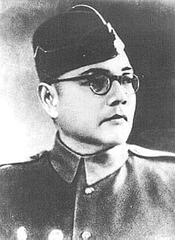

Early Life and Education
Subhas Chandra Bose was born on January 23, 1897, in Cuttack, India. From a young age, Bose was known for his intellectual prowess and his strong will. After attending the prestigious Presidency College in Calcutta, he moved to England to pursue higher studies. Despite his academic success, Bose’s deep passion for India’s freedom pulled him back to join the nationalistic movement.
His early encounters with the Indian independence movement and the harsh treatment of Indian people under British rule shaped his determination to free India from colonial domination. Bose's education helped mold him into one of the most influential leaders of his time.
Leader of the Indian National Army
Netaji Subhas Chandra Bose is renowned for his role in leading the Indian National Army (INA) during World War II. He firmly believed that India's independence could only be achieved through armed struggle. To this end, he forged alliances with the Axis powers to gather support for India’s freedom. His call to the INA, "Chalo Dilli" (Onwards to Delhi), is a testament to his fighting spirit.
The INA became a significant symbol of Indian resistance, with soldiers from different walks of life coming together to fight for the country’s liberation. Bose's leadership, tactical brilliance, and unwavering determination to free India have cemented his place in history as a revolutionary leader.
Legacy and Contributions
Netaji’s legacy is one of undying patriotism, courage, and vision. He sought to create an India free from oppression and inequality, advocating for social reform as much as political freedom. Bose's leadership of the INA and his relentless pursuit of independence continue to inspire future generations.
Even though his life was tragically cut short under mysterious circumstances, Netaji’s ideals and vision for a strong, independent India live on. His contributions to the Indian freedom struggle are immortalized in the hearts and minds of the Indian people.
Key Achievements
- Formed and led the Indian National Army (INA) during World War II.
- Organized the Provisional Government of Free India (Azad Hind Government).
- Posthumously hailed as one of the greatest leaders in the Indian independence movement.
- Galvanized Indian expatriates and soldiers to join the INA in their fight for India's freedom.
- Inspired millions with his slogan "Jai Hind" and his undying call for independence.
Photo Gallery
 
